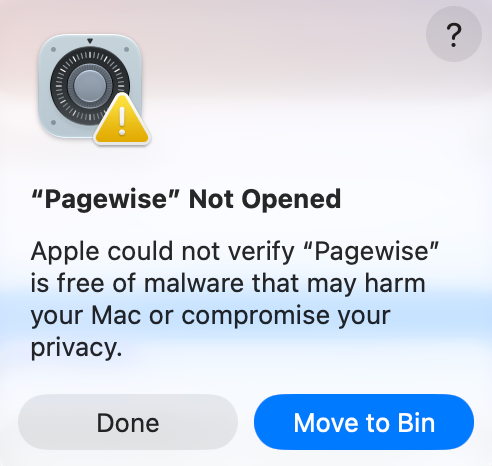
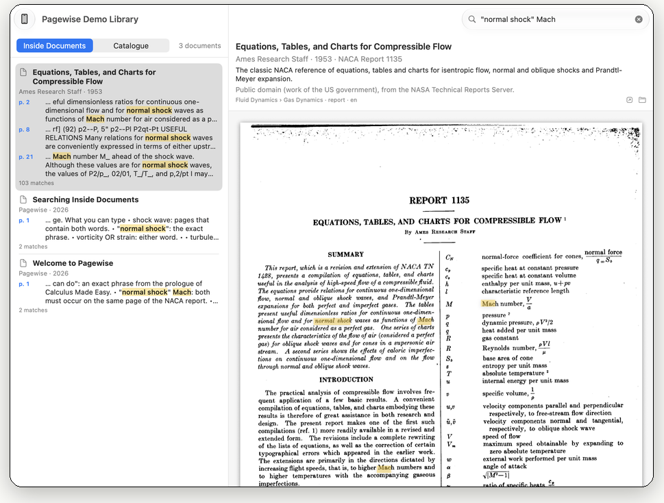
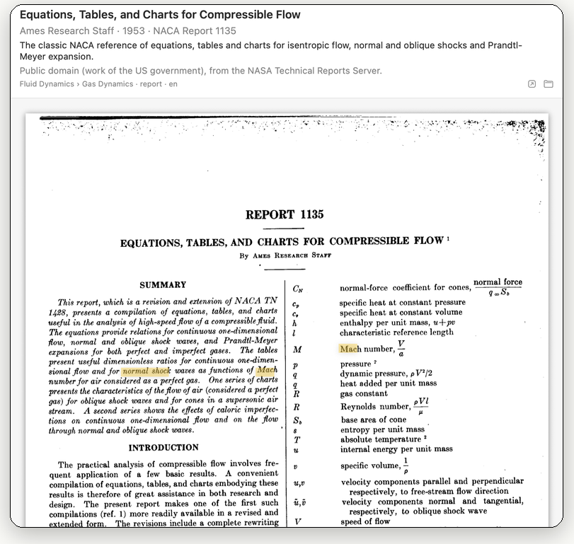
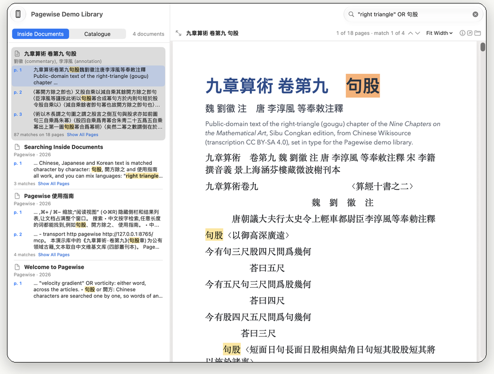
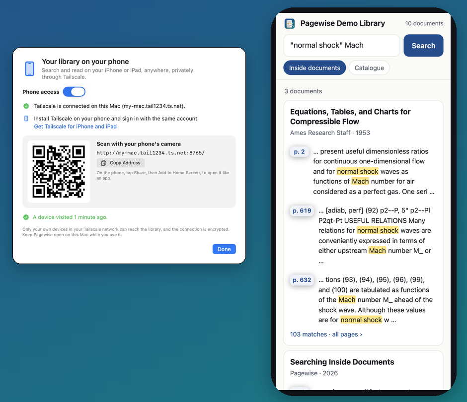
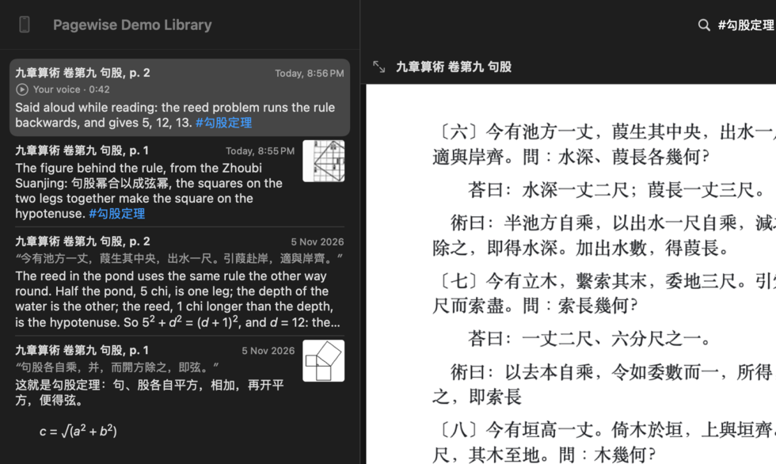
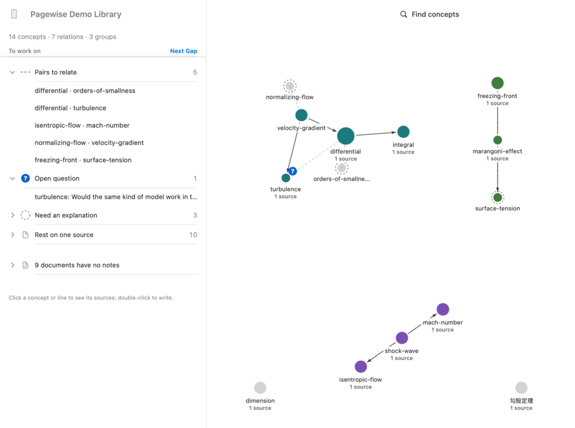
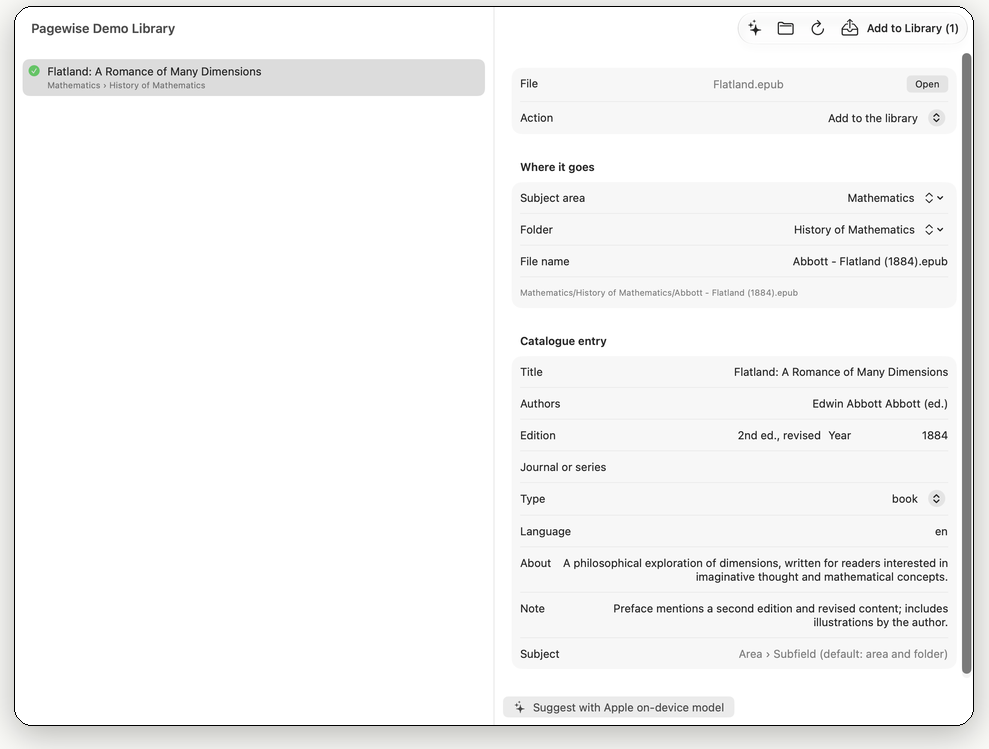
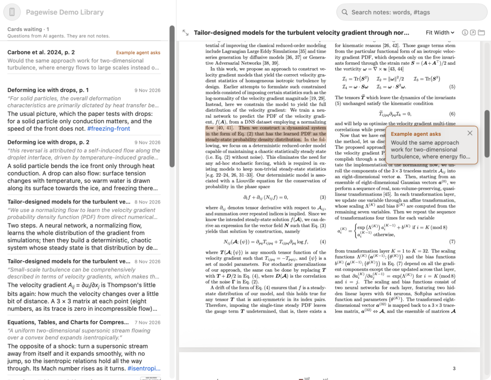
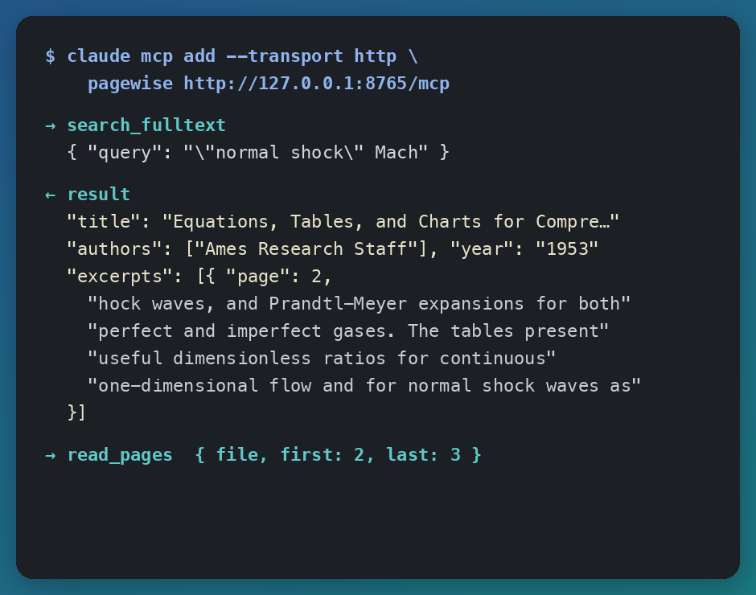

Built by you, with help from AI, and used by any AI.由你亲手建立，AI 从旁协助，任何 AI 都能使用。
Pagewise is a Mac app for your library of PDFs and EPUBs. It searches inside every page and opens the document at the right page, with your words highlighted. As you read, you write notes on passages, explain ideas in your own words and see how they connect on a map, every statement traced back to its page. AI helps: it files new books, points you to passages and lets assistants cite your pages. It never writes your notes.Pagewise 是一款管理 PDF 和 EPUB 资料库的 Mac 应用：在每一页里全文搜索，点一下就打开到那一页，搜索词高亮显示。阅读时，你在原文旁写下笔记，用自己的话解释概念，在一张地图上看到它们如何相连，每一句话都能追溯到原文那一页。AI 只是协助：为新书编目、把你引向值得一读的段落、让 AI 助手引用你的书页，但从不替你写笔记。
Version 0.4.0 beta · macOS 14 Sonoma or later · Apple silicon and Intel · 27 MB版本 0.4.0 测试版 · macOS 14 或更高版本 · Apple 芯片和 Intel · 27 MB
First launch: this beta is not yet notarized by Apple, so macOS blocks it the first time. Allow it once in System Settings › Privacy & Security › Open Anyway. How to open it第一次打开：这个测试版还没有经过 Apple 公证，macOS 第一次会阻止它打开。请在 系统设置 › 隐私与安全性 › 仍要打开 允许一次。怎么打开
A one-minute introduction, with sound.一分钟介绍视频（英文讲解）。
Opening Pagewise the first time第一次打开 Pagewise
This beta is not yet notarized by Apple, so the first time you open it macOS stops it with this message. Your download is fine: allow it once, and from then on Pagewise opens normally.这个测试版还没有经过 Apple 公证，所以第一次打开时，macOS 会显示下面这个提示并阻止它。下载的文件没有问题：允许一次，之后 Pagewise 就能正常打开。

The message you will see你会看到的提示
Click Done, not Move to Bin (or Move to Trash).点“完成”，不要点“移到废纸篓”。
Open System Settings › Privacy & Security and scroll down to Security. Next to “Pagewise” was blocked to protect your Mac, click Open Anyway and confirm with your password or Touch ID. Do it soon: the button shows only for a while after the block.打开“系统设置 › 隐私与安全性”，向下滚动到“安全性”。在 Pagewise 被阻止的提示旁边点“仍要打开”，用密码或触控 ID 确认。请尽快操作：这个按钮只在被阻止后的一段时间内显示。
Open Pagewise again and click Open. That is all: from now on it opens normally.再次打开 Pagewise，点“打开”。这样就好了，之后都能正常打开。
No Open Anyway button, or macOS says the app is damaged?找不到“仍要打开”，或者提示应用“已损坏”？
Open Terminal (in Applications › Utilities), paste this line, press Return, then open Pagewise again. It removes the “downloaded from the internet” mark from Pagewise only.打开“终端”（在“应用程序 › 实用工具”里），粘贴下面这一行并按回车，然后再打开 Pagewise。它只去掉 Pagewise 的“从互联网下载”标记。
macOS 14 Sonoma: Control-click (or right-click) Pagewise in Applications, choose Open, then click Open.macOS 14：在“应用程序”中按住 Control 点按（或右键点按）Pagewise，选“打开”，再点“打开”。
Your PDFs, searchable to the page你的 PDF，搜到每一页
Books, papers, lecture notes and standards in one private library on your Mac, with a catalogue you own.书、论文、讲义、标准，都放进你 Mac 上的私人资料库，目录完全归你所有。
Search inside every page每一页都能搜
Full-text search across every document, with the matching passages and their page numbers. Phrases, OR, NOT, prefix* and NEAR. Scanned pages can be read with Live Text.在所有文档里全文搜索，列出命中的段落和页码。支持短语、OR、NOT、前缀* 和 NEAR。扫描版的页面可以用“实况文本”识别。

One click to the page一点就到那一页
Click a page number and the PDF opens at that page, fitted to the window, with the match marked and your search words highlighted, on scanned pages too. ⌘G goes to the next match; Reading View gives the page the whole window. EPUB books open in Pagewise too.点击页码，PDF 就在那一页打开，页面适合窗口宽度，当前命中标出、搜索词高亮显示，扫描页也一样。⌘G 跳到下一个命中；“阅读视图”让页面占满整个窗口。EPUB 电子书也能在 Pagewise 里直接阅读。

Any language任何语言
Chinese, Japanese and Korean included, and mixed searches such as "right triangle" OR 句股.中文、日文、韩文都能搜，也能中英混合搜索，例如 "right triangle" OR 句股。

On your phone在手机上用
Scan a QR code, then search and read your library and your notes on your iPhone or iPad from anywhere, and write notes there too: privately through Tailscale, served from your Mac. A note opens at its page, with the passage marked.扫一个二维码，就能在 iPhone 或 iPad 上随时随地搜索和阅读你的资料库和笔记，也能在手机上写笔记：通过 Tailscale 私密连接，由你的 Mac 提供服务。点一条笔记，就打开那一页并标出原文。

From notes to knowledge从笔记到知识
A knowledge base you write yourself: notes on the passages you read, ideas explained in your own words, and a map of how they connect. Every statement leads back to a note, every note to a passage, and every passage to its page.由你自己写成的知识库：在读到的原文旁写笔记，用自己的话解释概念，再用一张地图看清它们如何相连。每一句话都能追溯到一条笔记，每条笔记追溯到一段原文，每段原文追溯到它的那一页。
Notes, the way you think笔记，按你的方式New新
Select a passage and press ⌃⌘N to write a thought. A note can also hold:选中一段文字，按 ⌃⌘N 写下想法。一条笔记还可以包含：
A sketch, drawn in the note window.草图：在笔记窗口里直接画。
A photo or picture, from a file or straight from your iPhone or iPad, or a part of the page: a figure, an equation, a table.照片或图片：来自文件，或直接用 iPhone、iPad 拍摄；也可以截取页面的一部分：一张图、一个公式、一张表。
Your voice, recorded in the note window and turned into text on your Mac; the text is yours only when you approve it.你的声音：在笔记窗口里录音，在你的 Mac 上转写成文字；经你确认后，文字才成为你的笔记。
Math, written as in LaTeX.数学公式：按 LaTeX 书写。
Notes work on EPUBs and on your phone, and connect through #tags. They live in one plain Markdown file; your PDFs are never changed.EPUB 和手机上也能写笔记，#标签 把它们连起来。所有笔记保存在一个纯 Markdown 文件里，PDF 本身不会被修改。

Concepts and a map of your knowledge概念与知识地图New新
Every #tag is a concept. Explain it in a few sentences of your own, citing your notes: each citation opens its passage. The map shows all your concepts and the relations you wrote, in groups, and marks what is thin: open questions, concepts without an explanation, pairs still to relate. To work on and Next Gap take you from one gap to the next.每个 #标签 都是一个概念。用几句自己的话解释它，并引用你的笔记：每条引用都能打开原文。地图显示你的全部概念和你写下的关系，同组同色，并标出理解薄弱之处：尚待回答的问题、还没有解释的概念、尚未写明关系的概念对。“To work on”和“Next Gap”带你逐个处理。

Notes from your e-reader: copy your library to an e-reader, mark the books there, and Library › Import Notes from E-reader… brings highlights, comments and handwriting back as notes, at the times you made them, each passage checked against your own copy of the book.从电子阅读器带回笔记：把资料库复制到电子阅读器上，在那里标注，再用“Library › Import Notes from E-reader…”把高亮、批注和手写内容带回来，成为带有原始时间的笔记，每段原文都在你自己的那本书里核对过。
AI helps, you decideAI 协助，由你决定
AI files your new books, points you to passages worth a note and lets assistants answer from your own pages. It never writes your notes: its help is a card or a suggestion for you to check. Apple's on-device model is the default: nothing leaves your Mac unless you choose a cloud service.AI 帮你给新书编目，把你引向值得写笔记的段落，还让 AI 助手根据你自己的书页回答问题。它从不替你写笔记：它的帮助总是一张卡片或一条建议，由你来核对。默认使用 Apple 本机模型：除非你选择云端服务，否则数据不会离开你的 Mac。
An AI librarian for new files新文件交给 AI 编目
Drag new files into the Inbox. An AI model reads the first pages, fills in the title, authors, edition and year, and files each book beside the most similar one you already have, under the subjects you use. You check the entry before anything moves.把新文件拖进收件箱。AI 模型阅读前几页，填好书名、作者、版次和年份，并把每本书放到你库里最相似的那本书旁边，沿用你已有的学科。文件移动之前，你都可以检查条目。

AI points, you writeAI 指出，由你来写New新
An AI agent can point you to a passage with a question. It floats beside the passage as a card, never as a note: answer it with a note of your own, or dismiss it. Agents cannot read the cards. While you explain a concept, AI can suggest a part from your notes, also as a card, for you to rewrite in your own words.AI 助手可以把你引向一段原文，并提出一个问题。它显示为浮在原文旁的一张卡片，而不是笔记：你可以用自己的笔记回答它，或者把它关掉。AI 助手读不到这些卡片。你解释一个概念时，AI 也可以根据你的笔记建议其中的一部分，同样显示为卡片，由你用自己的话重写。

Knowledge as a service, for any AI知识即服务，任何 AI 都能用
Your knowledge base is served from your Mac to any AI app that speaks MCP: Claude, Cursor, Codex and others. It can search your library, read the pages it needs, read your notes and explanations, and cite the exact page, so its answers rest on what you built. It points you to passages only as cards. Turn on Serve the library in Settings › Phone & Agents, then, for Claude Code:你的知识库由你的 Mac 提供给任何支持 MCP 的 AI 应用：Claude、Cursor、Codex 等。它能搜索你的资料库、阅读需要的页面、读你的笔记和解释，并注明出处到页，让它的回答建立在你亲手建立的知识之上。它只能以卡片的形式把你引向某段原文。在“设置 › Phone & Agents”中打开 Serve the library，然后在 Claude Code 中运行：
claude mcp add --transport http pagewise http://127.0.0.1:8765/mcp
Other apps take the same address, or start the included pagewise command themselves. It also serves scripts.其他应用填写同一个地址即可，也可以自己启动附带的 pagewise 命令；脚本同样可以使用它。

Your documents stay on your Mac你的文档留在你的 Mac 上
No account, no analytics, no tracking.无需账号，没有统计，不追踪。
A catalogue you own目录归你所有
Plain Markdown beside your files (INDEX.md per subject area, NOTES.md for your notes, CONCEPTS.md for your explanations): readable and editable anywhere, easy to keep in Git. Rename, merge or drag between subjects and the folders follow.纯 Markdown 文件就放在你的文件旁边（每个学科一个 INDEX.md，笔记在 NOTES.md，概念解释在 CONCEPTS.md）：任何地方都能读、能改，也方便用 Git 保存。在学科之间重命名、合并或拖动，文件夹也跟着改。
Private by default默认就是私密的
Your documents, catalogue, notes, pictures, recordings and search index stay in the folder you choose. Live Text, voice transcription and Apple's on-device model run on your Mac. Pictures and recordings are never sent to an AI.文档、目录、笔记、图片、录音和搜索索引都留在你选择的文件夹里。“实况文本”、语音转写和 Apple 本机模型都在你的 Mac 上运行。图片和录音从不发送给 AI。
Only what you turn on只在你开启时
Data leaves your Mac only if you choose a cloud AI service (then only what you ask about: a new file's first pages, with your subject names and the titles of the few most similar documents; or a concept's notes, for a suggested part of its explanation) or turn on phone access (then only to your own devices; notes you write on the phone are saved on your Mac).只有你选用云端 AI 服务（只发送你所询问的内容：新文件的前几页，以及学科名称和最相似的几本文档的标题；或在你请 AI 建议解释的一部分时，这个概念的笔记），或开启手机访问（只发送到你自己的设备；在手机上写的笔记保存在你的 Mac 上）时，才会有数据离开你的 Mac。
Open Pagewise. The first time, macOS stops it because this beta is not yet notarized by Apple: allow it once as shown in Opening Pagewise the first time.打开 Pagewise。因为这个测试版还没有经过 Apple 公证，第一次打开时 macOS 会阻止它：按 第一次打开 Pagewise 里的步骤允许一次即可。
Click Try the Demo Library to see what Pagewise does: it has notes, concepts, a map and an AI agent's card to try. Or click New Library… for your own documents. Eight short guides, and one in Chinese, are in the Help menu.先点 Try the Demo Library 看看示例资料库：里面有笔记、概念、知识地图和一张 AI 助手的卡片。或者点 New Library… 管理你自己的文档。“帮助”菜单里有八篇简短的英文指南和一篇中文指南。
Optional: AI suggestions use Apple's on-device model (macOS 26 with Apple Intelligence), an API key for DeepSeek, MiniMax, Anthropic or another OpenAI-compatible service, or Ollama on your Mac. Phone access needs Tailscale on your Mac and your phone.可选：AI 建议可以用 Apple 本机模型（需 macOS 26 和 Apple 智能），也可以用 DeepSeek、MiniMax、Anthropic 或其他兼容 OpenAI 接口的服务（需你自己的 API 密钥），或在 Mac 上运行的 Ollama。手机访问需要在 Mac 和手机上都安装 Tailscale。
A free beta, with everything included免费测试版，全部功能都包含
Search, notes, concepts and the map, the Inbox with AI suggestions, phone access and AI agents are all included and free during the beta. Pagewise is new, so please tell us what goes wrong and what you would like.搜索、笔记、概念和知识地图、带 AI 建议的收件箱、手机访问和 AI 助手，测试期间全部免费。Pagewise 还很新，遇到问题或有想法，欢迎告诉我们。
Replace Pagewise in Applications with the new version. Your libraries are ordinary folders and are not touched. All versions.用新版本替换“应用程序”中的 Pagewise 即可，你的资料库是普通文件夹，不受影响。所有版本。
Check the download核对下载文件
SHA-256 of Pagewise-0.4.0.dmg:Pagewise-0.4.0.dmg 的 SHA-256：
To check it, paste this in Terminal and compare the result with the line above (change the path if you saved the file elsewhere):核对方法：在“终端”里粘贴下面这一行，把结果和上面那一行比较（如果文件不在“下载”文件夹里，请改成实际路径）：